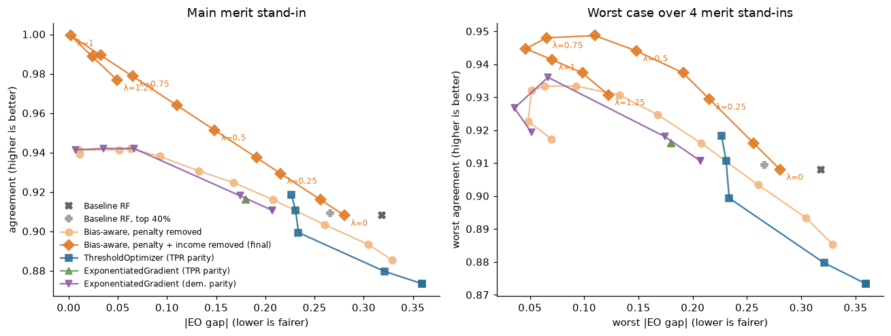
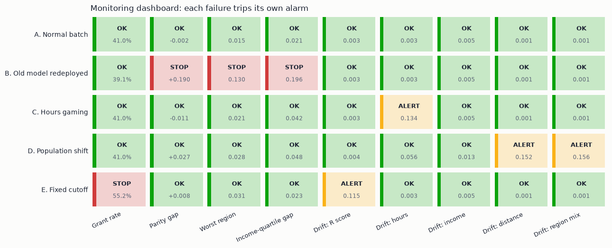

IVADO · ÉquiAlgo · CodeML 2026
Same R score,
different postal code,
different answer.
Finding and removing two hidden regional biases in scholarship decisions
CertifiedHackerBoys · Ryan Morov · Aidin Yaseri · Arav Sahni · Makan Homayoun
The problem
An 88%-accurate model that copies a biased committee
48.4%
grant rate, Montréal and Capitale-Nationale
27.3%
grant rate, Bas-Saint-Laurent, Côte-Nord, Gaspésie
0.7
R-score points between the two groups, on a scale with SD 3
A 21-point gap in outcomes, a small gap in grades. The model is "accurate" because it reproduces past decisions, and those decisions are under audit.
Bias channel 1
The committee docked remote applicants about 1.6 R points
- Between R 28 and 29: 59% granted in centres, 26% in remote regions.
- The committee applied a flat penalty of ≈ 1.6 R points (95% CI 1.4–1.7), the same in all 3 remote regions. It explains 83% of the gap.
190 of 1,628
remote applicants the production model would fund if they simply lived in Montréal (same grades, hours, income)
Why "just delete the column" fails
Proxies rebuild the penalty
- SHAP: distance costs remote applicants as much as the region label. Location moves their probability by −10 points (centres: +6).
- Distance and postal code predict region almost perfectly (AUC ≈ 1.0); hours 0.80; income 0.68.
- Delete the region column and the penalty moves onto distance.
The bias is in the labels, not the columns.
Bias channel 2
The committee also rewarded family income
- Remote families earn 25% less (median 51.6 k$ vs 69.2 k$). An income bonus works against them too.
- The two biases stack: 4 in 10 deserving low-income remote students were refused (TPR 0.58).
- We tested it with 24 HxBuddy submissions, each changing one ingredient.
Income is not merit. Hours worked are, at exactly the committee's own weight. Distance and first-generation status add nothing.
| Merit score tested | HxBuddy acc. |
|---|
| R + income | 90.08 |
| R only | 92.28 |
| R + income + hours + distance | 92.38 |
| R + hours + distance | 94.38 |
| R + 0.12 / 0.17 / 0.20 × hours | 94.33 / 94.53 / 94.03 |
| 7 nearby weights and rates (0.135–0.158, 40.75–41.5%) | 94.48 – 94.63 |
| R + 0.146 × hours, 41% | 94.68 |
Metric choice
Equal opportunity, measured against merit, not the committee
- Why equal opportunity: a merit award promises that a deserving student in Gaspé has the same chance as one in Montréal.
- Why not demographic parity: it forces equal rates whether or not merit differs, and says nothing about who gets the award.
- The trap: against the committee's labels the production model's TPR gap is only 0.06. It "passes" by copying the bias.
| Merit reference (no penalty) | EO gap, production |
|---|
| Committee criteria, penalty removed | 0.261 |
| R score only | 0.225 |
| R score + hours worked | 0.296 |
| R + income + hours (linear) | 0.236 |
| Organisers' hidden reference | 0.270 |
Our references bracket the published value: evidence the diagnosis is right.
The fix
Make the model aware of the bias, then switch it off
committee = 1.39·R + 0.20·hours + 1.78·log(income) + 0.11·distance − 2.17·remote
our score = R + 0.146 × weekly hours worked → top 41% get an award
- Train with the remote indicator in the model, so it absorbs the penalty instead of the proxies.
- Score with the penalty, the income bonus and distance removed. Same merit, same score, wherever you live.
- Budget: 1,640 of 4,000 awards (41%), inside the 36–44% window.
- Fairness knob: λ, the share of the penalty removed. Sweeping it gives the Pareto front.
Pareto front
Fairness and merit improve together

Held-out split, budget enforced. Dark diamonds: our final model. ThresholdOptimizer closes a third of the gap at best, and EG with TPR parity does not move: on biased labels the constraint is already met.
Results on the 4,000 applicants
Gap closed, budget kept
| Production | Ours |
|---|
| Grant rate | 39.1% | 41.0% |
| Grant rate centres / remote | 46.8% / 27.8% | 40.9% / 41.1% |
| EO gap vs R + hours merit reference | 0.296 | 0.000 |
| HxBuddy indicative accuracy / macro F1 | | 94.68% / 94.47% |
| Accuracy vs past committee (held-out) | 0.881 | 0.853 |
Same grades, different lives. Of 390 changed decisions, those who gain and those who lose have the same average R score (28.6). Those who gain work twice the hours (14.6 vs 7.4/week) with half the family income (45 k$ vs 84 k$).
Governance
Monitoring is code, and we tested it on failures

- Old biased model redeployed: STOP, even though its budget looks normal. Hours inflated: ALERT (else 103 honest students lose out).
- Region and income only measure bias, never score. Law 25 notice and human review. Awards already granted are never withdrawn.
Limits
What we cannot claim
- We never saw the jury's reference. HxBuddy feedback chose two settings (drop income, 41%); three more rounds found nothing better, and we disclose all 24.
- If merit should ignore hours worked, our model slightly favours remote applicants (gap ≈ −0.05).
- ExponentiatedGradient with tight demographic parity is a close competitor. We prefer one readable formula.
- Synthetic data, two regional blocks. Other regions and a legal review are needed before roll-out.
Takeaway: the fix was not a better classifier. It was refusing to treat past decisions as the truth.